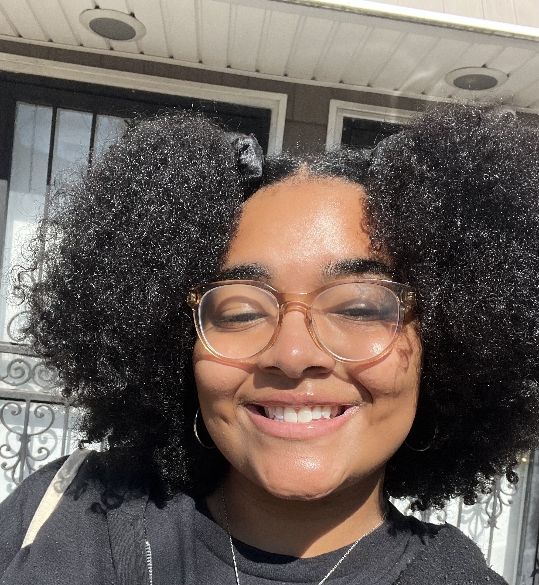

Marlene Reyes

Graphic designer with a special interest in brand design, packaging design, and web development.
Hobbies
Contact
Work Experience
Suite9c, Manhattan, NYC
Design Intern ~ January 2024-May2024
- Collaborated closely with design team in developing design concepts
utilizing brand guidelines and creating mock-ups to demonstrate
creative thinking.
- Created moodboards and executed brand activations based off of
those inspirations.
- Completed presentations to demonstrate various concepts to clients.
Freelance Graphic Designer, NYC
March 2024-Present
- Created various brand identity assets from start to finish through brainstorming,
moodboards, market research, and consumer profiles.
- Aided in branding identites for start-ups and rebranding for entrepreneurial businesses through
social media posts, highlights, and product design as well.
Lucile Palmero Kips Bay Boys & Girls Club, Bronx,NY
Program Coordinator ~ October 2024-Present
- Ensured various programs ran accordingly amongst staff memeber.
- Kept records of daily attendance, supply list needed for programming, and
ensuring everything runs smoothly if Director is not present.
Art Specialist ~ September 2021-January 2024
- Created STEAM lesson plans involving art and history to teach
elementary and middle school members about how fun art can be.
- Taught members various mediums and art tools in order to explore
with the idea of their creativity.
SONYC Activity Specialist ~ September 2020-June 2021
- Helped members and staff with various educational and character
building programs throughout the school year
- Created lesson plans for SONYCs art program for the school year.
Education Department Staff ~ September 2019-March 2020
- Helped members with their homework, faciliated educational
programs and activities to encourage communication, leadership and
build character for participating members.
Education
Fashion Institute of Technology
BFA in Packaging Design
May 2024
AAS in Communication Design
May 2022
AAS in Illustration
May2021
Skills
- Adobe Suite
- InDesign
- Photoshop
- Illustrator
- Bilingual
- CPR Certified